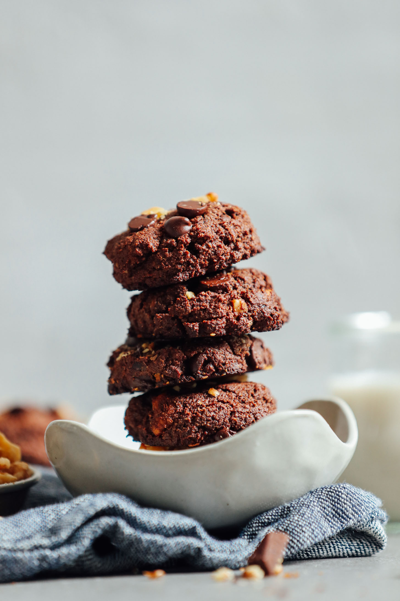

Brookies

Description
A combination of a brownie and a cookie, these "brookies" are the perfect dessert
Ingredients
- 1 cup of almond flour
- 1/2 cup dark chocolate
- 1/3 cup cocoa powder
- 1/2 tsp baking powder
- 1/4 tsp salt
- 1/3 cup coconut sugar
- 4 large medjool dates (pitted, chopped, and soaked)
- 2 large eggs (or substitute)
- 3 Tbsp melted coconut oil
- 1/2 tsp vanilla extract
Steps
- In a large bowl,stir together almond flour, half of the dark chocolate chips, cocoa powder, baking powder, sea salt, and coconut sugar. Add in chopped dates and use a whisk to combine / break up dates into the mixture. Set aside.
- In a separate bowl, beat the eggs.
- To the eggs, add the melted coconut oil and vanilla. Combine.
- Melt the remaining half of the dark chocolate chips and fold/stir into the egg mixture.
- Add wet ingredients to dry ingredients and mix until well combined. You should have a semi-tacky dough. Loosely cover and chill in the refrigerator for 30 minutes.
- Preheat oven to 375 degrees F (190 C) and line a baking sheet with parchment paper. Scoop out roughly 1 1/2-Tablespoon amounts of dough and place on baking sheet with about a 1-inch gap between each cookie to allow for spreading. Gently press down with palm of hand to form small discs.
- Bake on the center rack for 12-17 minutes or until puffy and no longer wet. Remove from oven and let cool 5-10 minutes.
- Carefully set cookies on wire rack to cool.
- Store completely cooled at room temperature up to 3 days, in the fridge for 4-5 days, or in the freezer up to 1 month.
Back to Main Page